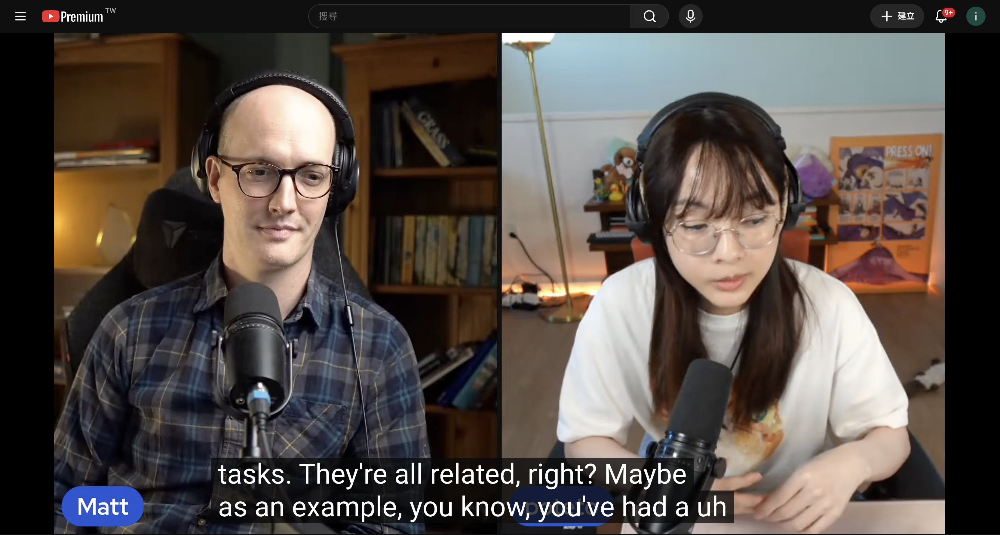
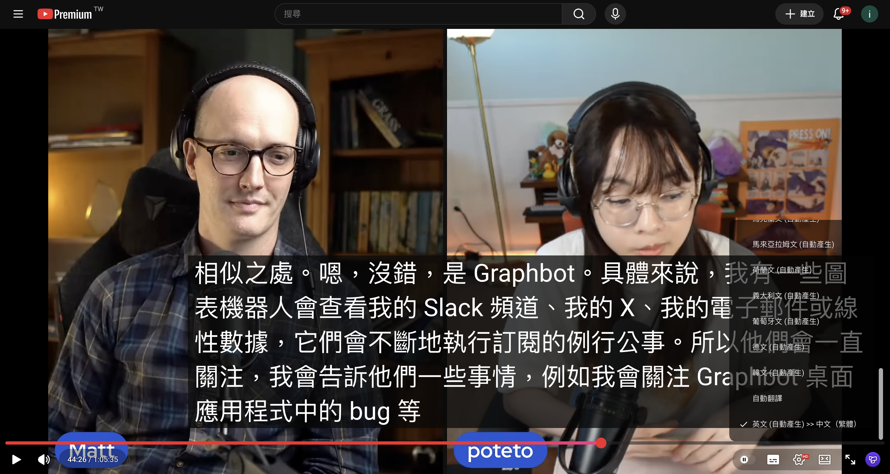
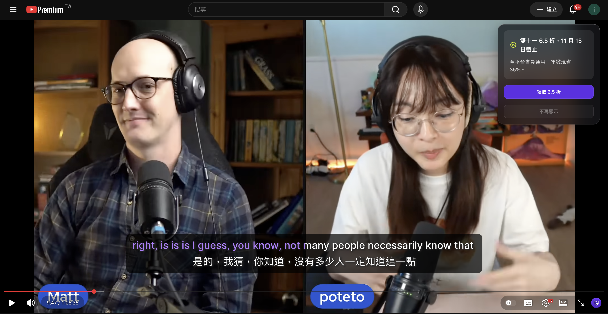
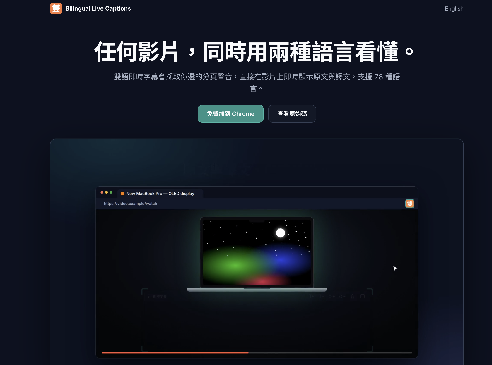
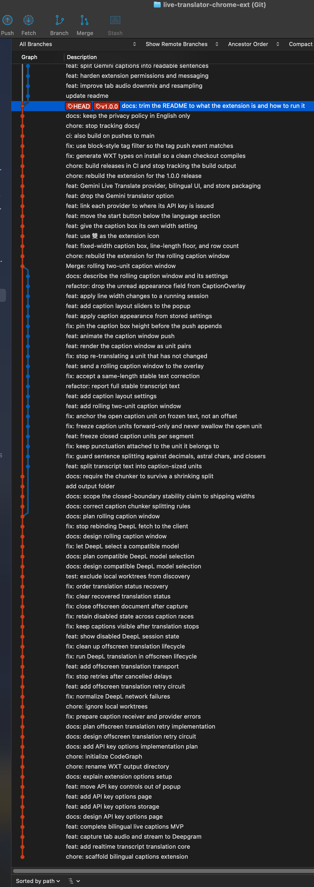
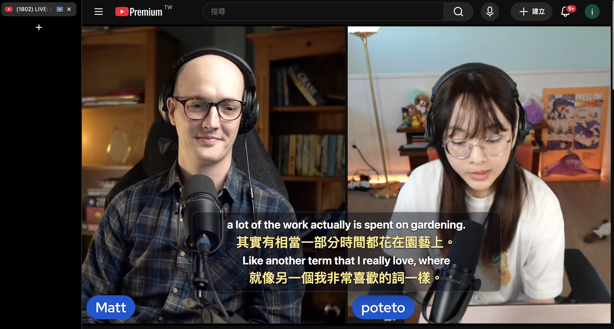
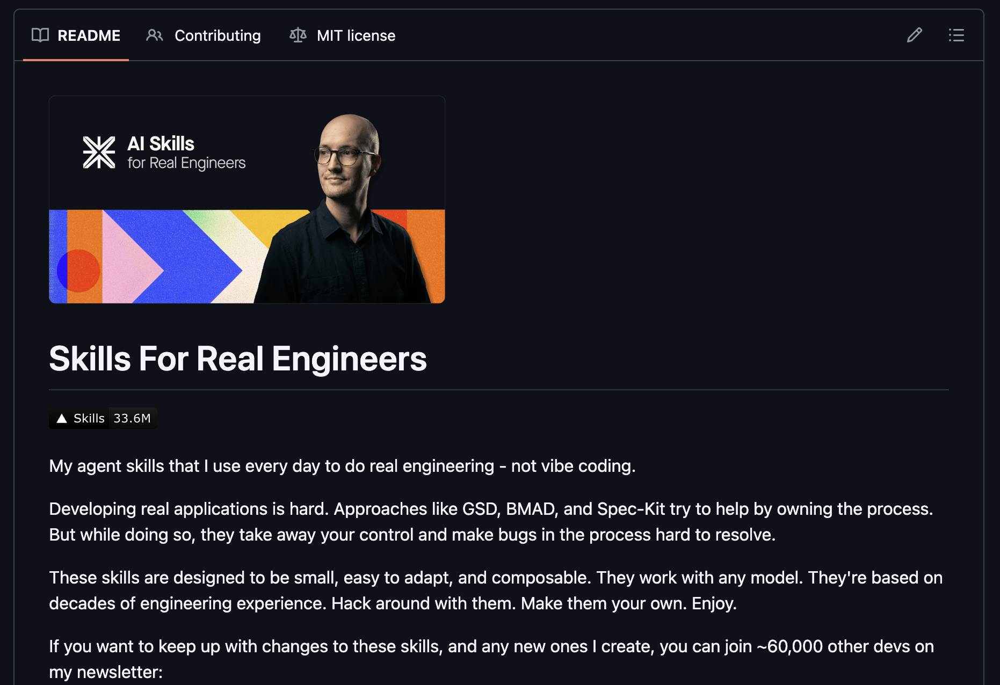
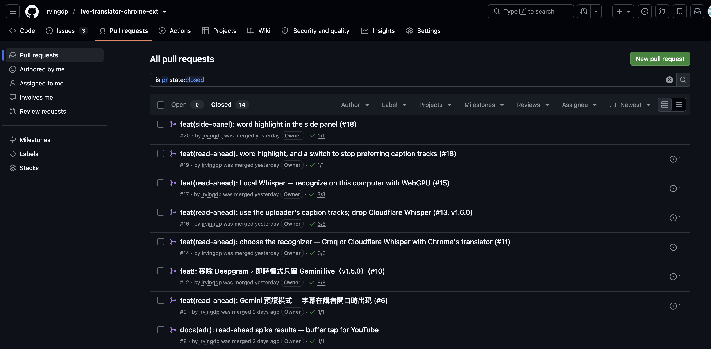
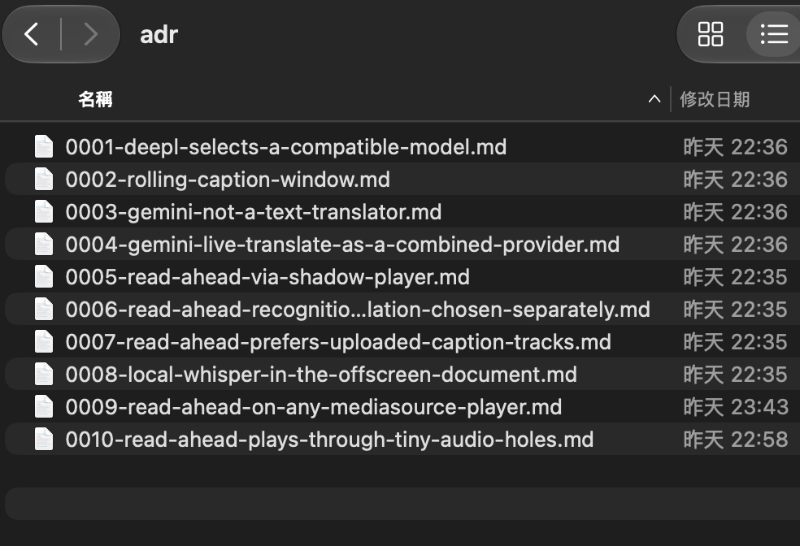

想看國外的
第一手的影片
只有英文字幕
沒有中文字幕
只有自動翻譯的選項…
翻的斷字怪怪的
我想要中英雙語對照


下載字幕外掛，
用到很開心的時候…
忽然免費額度用完
跳出付費頁面…


一個 Prompt
生成 App?
AI Slop?
網路上說的
都是騙人的!
一堆 bug!
一個一個問題
請 AI 修
修到 1.0 版
經歷了 75 個 Commit..
往更複雜的
需求開發
需要換一種開發流程
(本地模型，逐字標示..)
↑


當我裝上大神的 skills
github.com/mattpocock/skills符合軟體工程
的工作流
docs/ADR
Architecture Decision Record
踩坑的過程全記錄
踩坑記錄
痛點要讓金魚腦的 AI 知道

- /grill-
with‑docs需求訪談，
產生文件
(ADR、Domain) - prototype做 POC
- /to-spec規格定案，
開 GitHub Issue - /implement實作 + 測試
- /code-review
- test / merge


- 0001DeepL 指定模型反而全失敗
- 0002字幕太長蓋畫面，改捲動視窗
- 0003Gemini 文字翻譯會爆額度
- 0004改走音訊路徑，辨識翻譯合一
- 0005字幕總慢半拍，改預讀音訊
- 0006每日額度用完，辨識改 Groq
- 0007直接抓字幕是空的，改攔播放器
- 0008本機跑 Whisper 免額度
- 0009逐站適配易壞，統一攔 MSE
- 00100.03 秒空隙卡死播放器
AI
- Coding
- 測試
- 部署
人類
?
- 開需求
- 搭建測試環境
- 審核